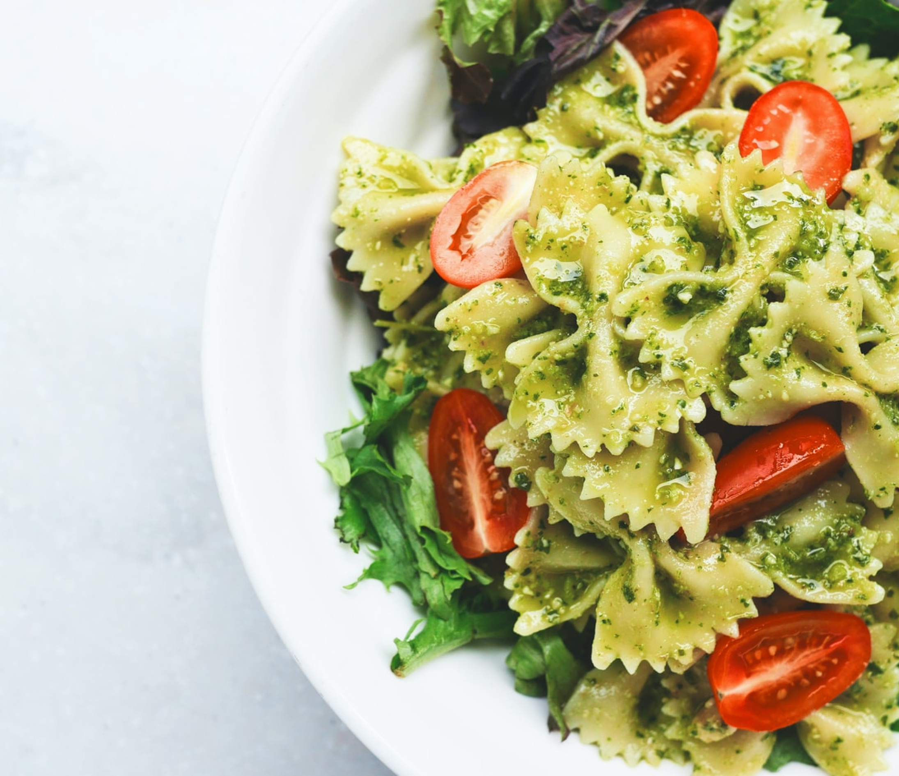

My Recipes
Take your pick from chicken thighs tossed with thyme sprigs and shallots, Cheddar-stuffed breasts topped
with seasoned breadcrumbs, and other recipes that showcase how these simple ingredients can create magic
in your kitchen.

Recipie title
A Spanish tortilla is just as tasty when made in your air fryer. This recipe saves on cleanup and
reduces oil from the traditional recipes. Try this nestled in a ciabatta roll with some hot sauce.

Recipie title
My family loved the boxed version of this ground beef stroganoff, but we have done away with
processed foods. I created this out of necessity, and they don't miss the box at all! It's creamy
and delicious!

Recipie title
Roasted zucchini with onion and layered with marinara sauce and pasta. A meal-in-one with a salad
and rolls. Can't get better than that! A great way to use up your zucchini crop in the summer..